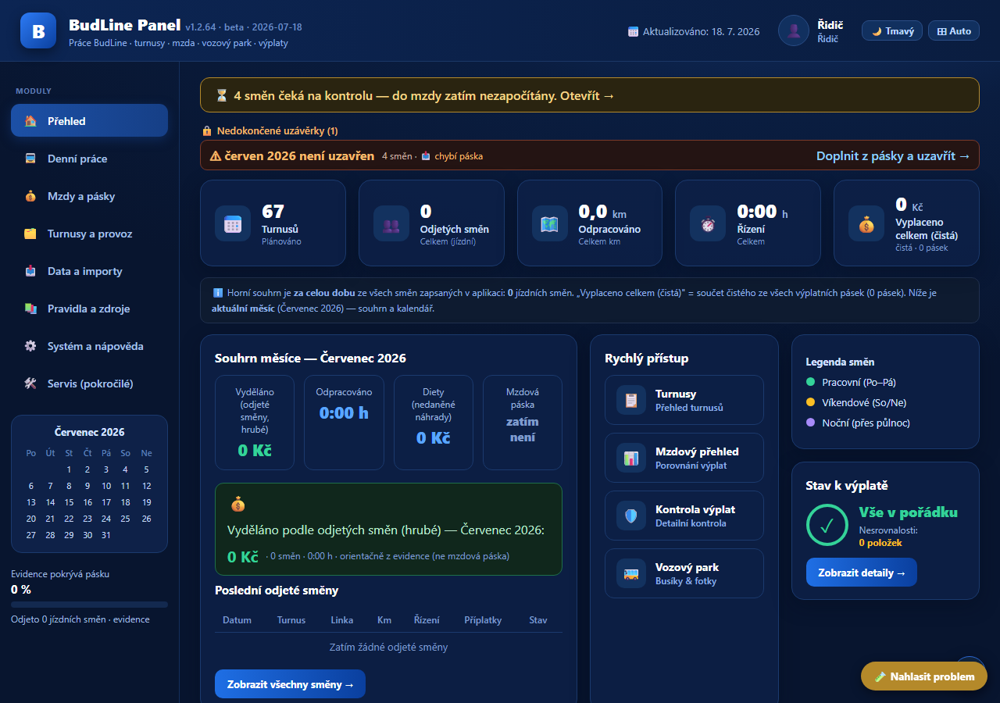
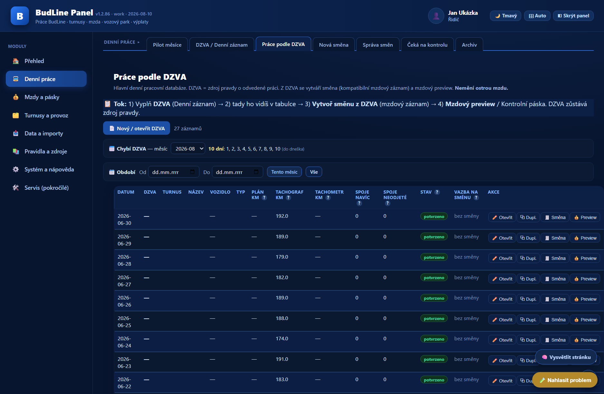
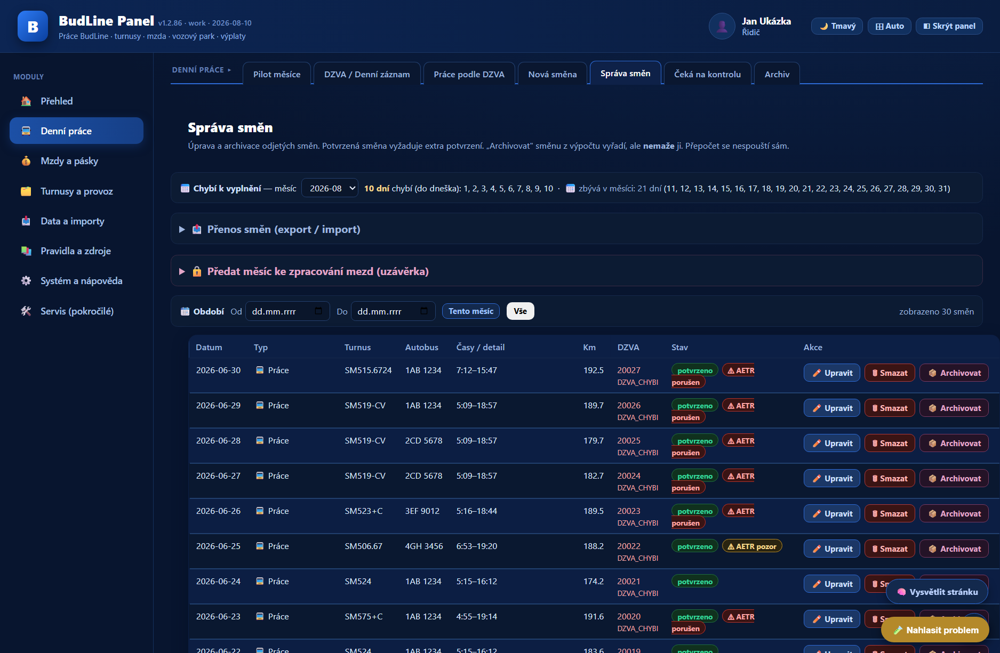
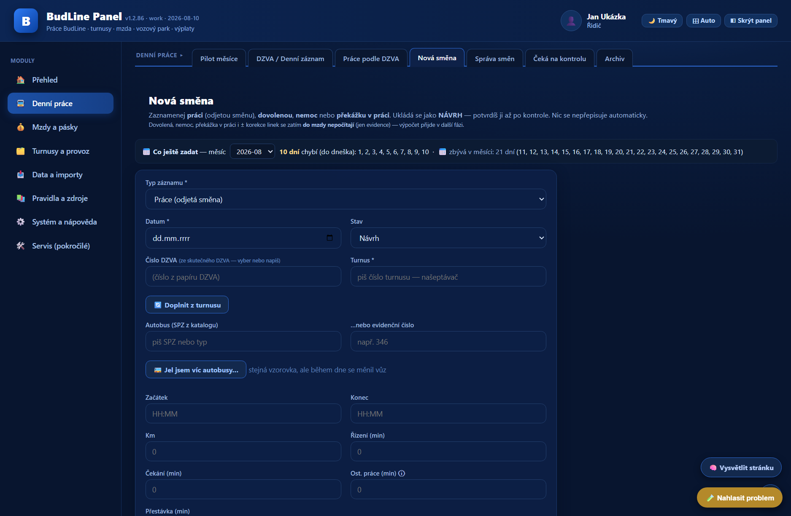
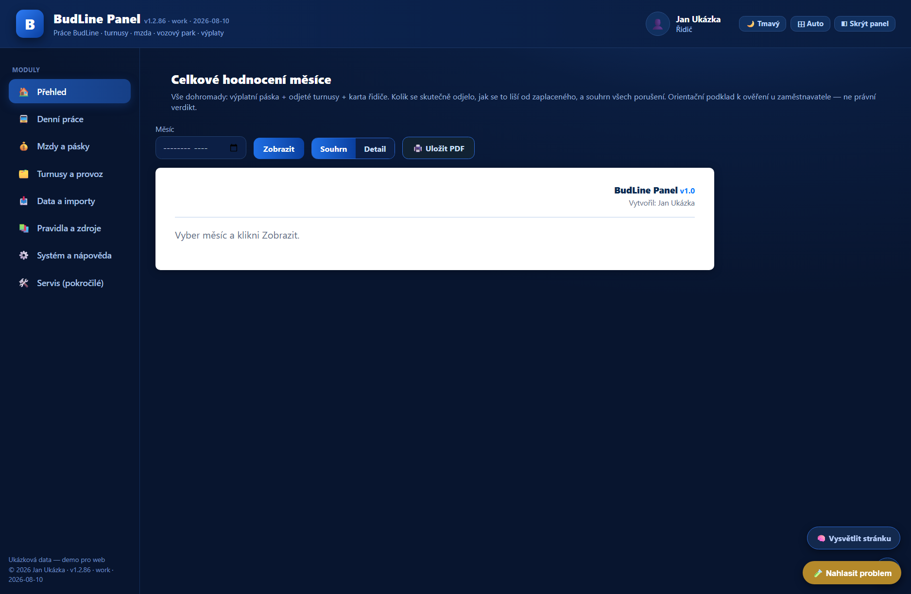
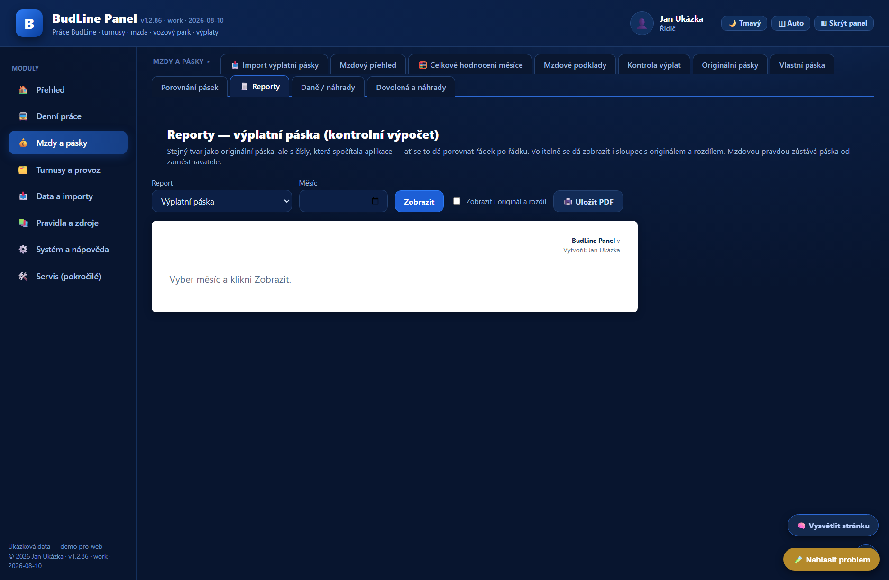
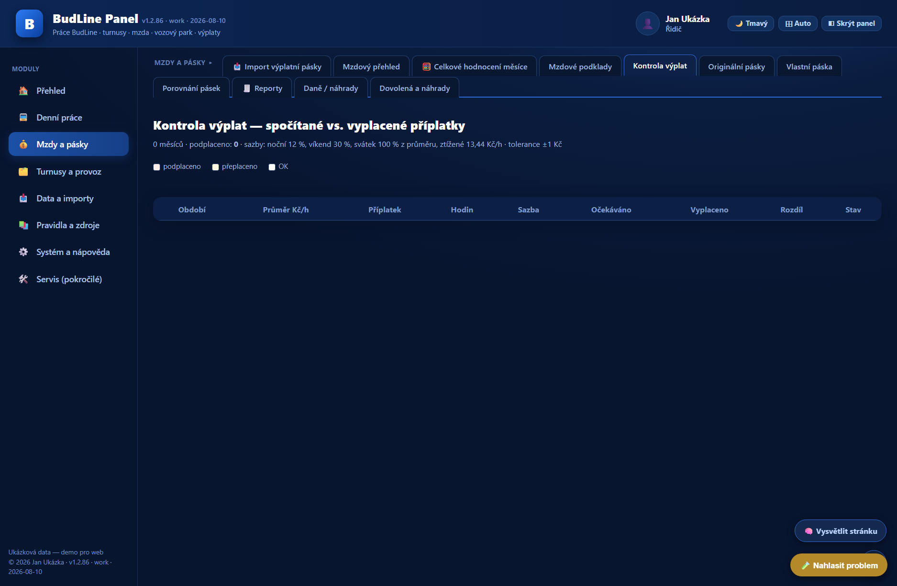
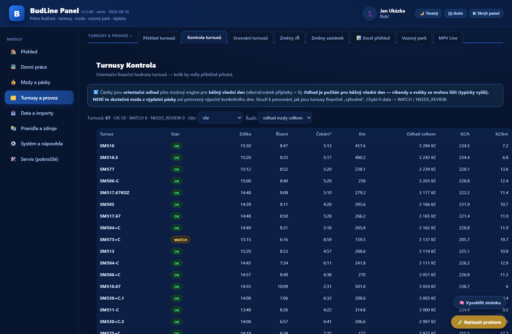
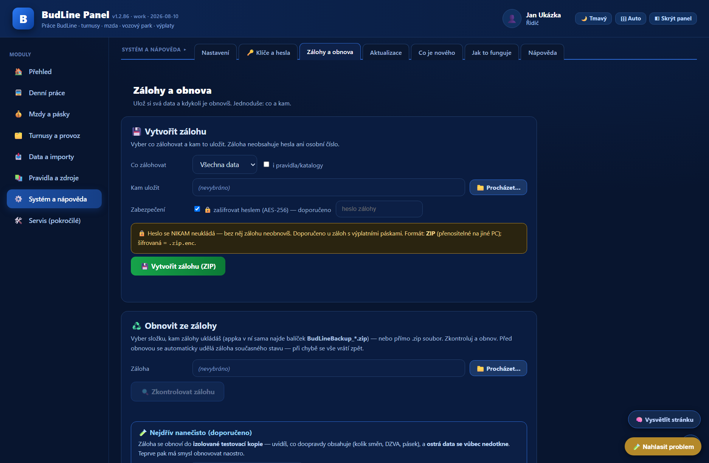
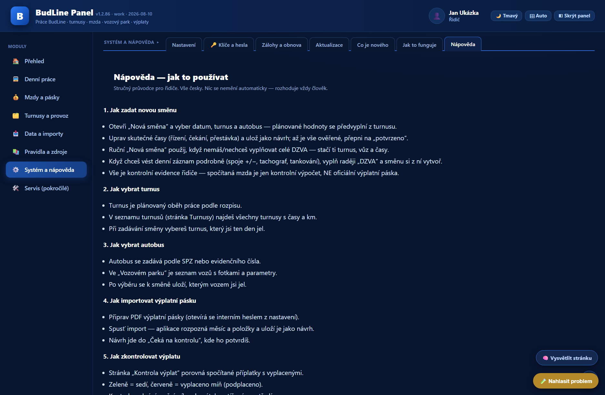

Přehled o směnách
Turnusy, odjeté směny a docházkové součty mám pohromadě. Údaje mohu doplnit také z karty řidiče.
Směny, turnusy a kontrola výplaty na jednom místě. Zapíšu, co jsem odjel, a na konci měsíce porovnám podklady s výplatní páskou.
Soukromá beta pro Windows a macOS. Instalátor předávám osobně.
Aktuální beta
Turnusy, odjeté směny a docházkové součty mám pohromadě. Údaje mohu doplnit také z karty řidiče.
Podklady podle nastavených pravidel porovnám s páskou. Rozdíly dohledám po jednotlivých položkách.
Evidence zůstává lokálně. Zálohy a zkušební obnova pomáhají chránit zapsané údaje.
Z turnusu a denního záznamu doplním skutečnost. Ručně zadám hlavně to, co se od plánu lišilo.
Aplikace sestaví přehled hodin a podkladů pro mzdu podle nastavených pravidel.
Srovnám vypočtené a vyplacené položky. Když něco nesedí, mohu hledat konkrétní rozdíl.
Používáme ji dva — já a kolega z práce. Slouží ke kontrole vlastní výplaty a nenahrazuje účtárnu.









Všechny snímky používají ukázková data a zachycují rozhraní dané verze.
Řidič autobusu dostane každý měsíc výplatní pásku, na které je jedno číslo. Ověřit ho znamená projít turnusy, spočítat hodiny řízení, čekání, noční a víkendové příplatky a stravné — a to podle kolektivní smlouvy, ne od oka. BudLine Panel dělá přesně tohle: vede evidenci toho, co se odjelo, spočítá z ní, kolik by mělo přijít, a postaví to vedle toho, co skutečně přišlo.
Den se zapíše ze dvou zdrojů. Turnus (vzorovka) říká, co se mělo jet — spoje, časy, kilometry, přestávky. DZVA (denní záznam o provozu vozidla) je papír od dispečera: číslo dokladu, autobus, stavy tachografu a tachometru. Aplikace obojí spojí a dopočítá zbytek, takže se ručně zadává jen to, co se od plánu liší.
Nad evidencí běží mzdový výpočet podle kolektivní smlouvy: tarif, výkonová složka, čekání, ztížené prostředí, příplatky za noc, víkend a svátek, stravné podle délky směny. Výsledek jde vidět po dnech i za celý měsíc.
Aplikace nemá čísla vymýšlet. Když si nemůže být jistá, řekne to a spočítanou hodnotu radši neukáže, než aby ukázala špatnou.
Není to mzdový systém a nenahrazuje účtárnu. Nepočítá cizí lidi, neposílá nic zaměstnavateli a nemá webovou verzi. Je to nástroj jednoho řidiče na kontrolu vlastní výplaty — a takhle je taky psaná.
Python · SQLite · Windows · macOS
🔒 Aplikace není veřejně ke stažení. Instalátor tady záměrně nenajdeš — odkaz posílám osobně tomu, komu aplikaci dávám. Číslo verze na téhle stránce zůstává: doplňuje se samo ze stejného místa, odkud si už nainstalovaná aplikace bere automatické aktualizace.
🔒 Instalátor je chráněný heslem — heslo dávám osobně, na webu není a nebude.
🍏 macOS: při prvním spuštění klikni na aplikaci pravým tlačítkem → Otevřít (je nepodepsaná, je naše vlastní). Kdyby psalo „poškozený", spusť v Terminálu xattr -cr "/Applications/BudLine Panel.app".
🛡️ Windows může zobrazit upozornění SmartScreen (unsigned beta instalátor). Pokud aplikaci znáš a čekáš ji ode mě, klikni „Další informace" → „Přesto spustit".
⚠️ Před instalací zavři běžící aplikaci.
Verze 1.2.114 BETA — přesné číslo verze se natáhne automaticky z manifestu vydání (stejný zdroj, ze kterého si aplikace bere tiché aktualizace). Aplikaci aktivně používáme dva, vyvíjí se podle reálných výplatních pásek. Beta = funguje, ale stále se ladí; instalátor je nepodepsaný a zaheslovaný.
Pozn.: aplikace je orientační kontrolní pomůcka, ne účetní ani daňové poradenství. Závazná je výplatní páska zaměstnavatele.